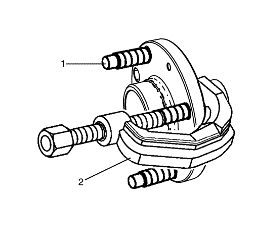
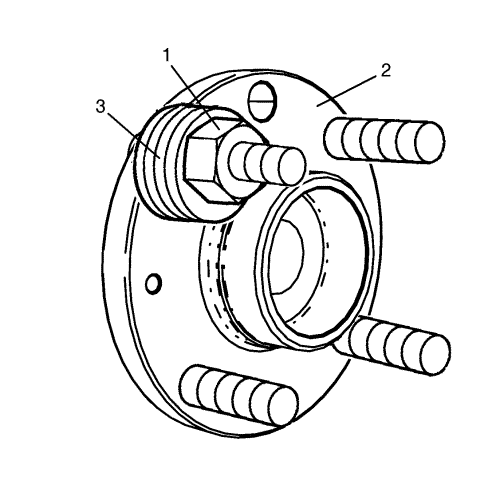

Spark
Sustitución de los espárragos de rueda
Herramientas especiales
CH-43631
Extractor de rótulas
Procedimiento de desmontaje
Elevar el vehículo y soportarlo de manera segura. Consultar
Elevación del vehículo con un gato
.
Desmonte la rueda del vehículo. Consultar
Desmontaje y montaje de los neumáticos y las ruedas
.
Sin desconectar el tubo flexible del freno hidráulico, desmonte y apoye la pinza de freno y el soporte como un conjunto, y desmonte el motor del freno. Consultar
Sustitución del rotor de freno delantero
.
Desmonte el cubo de la rueda delantera. Consultar
Sustitución del cubo y cojinete de la rueda delantera
.

Utilice la herramienta de desmontaje de rótula
CH-43631
(2) para liberar el espárrago (1) del cubo y deseche el espárrago.
Procedimiento de montaje

Coloque un NUEVO espárrago en el cubo de rueda.
Colocar suficientes arandelas (3) para facilitar la inserción del espárrago en el cubo.
Monte la tuerca de rueda (1).
Apriete la tuerca de rueda hasta que la cabeza del espárrago esté totalmente asentada en la parte trasera de la brida de la rueda/cubo (2).
Retirar la tuerca de rueda (1) y las arandelas (3).
Monte el cubo de la rueda delantera. Consultar
Sustitución del cubo y cojinete de la rueda delantera
.
Monte el rotor de freno e instale la pinza y el soporte como un conjunto. Consultar
Sustitución del rotor de freno delantero
.
Monte el conjunto de neumático y llanta. Consultar
Desmontaje y montaje de los neumáticos y las ruedas
.
Bajar el vehículo.
© Copyright Chevrolet. Reservados todos los derechos